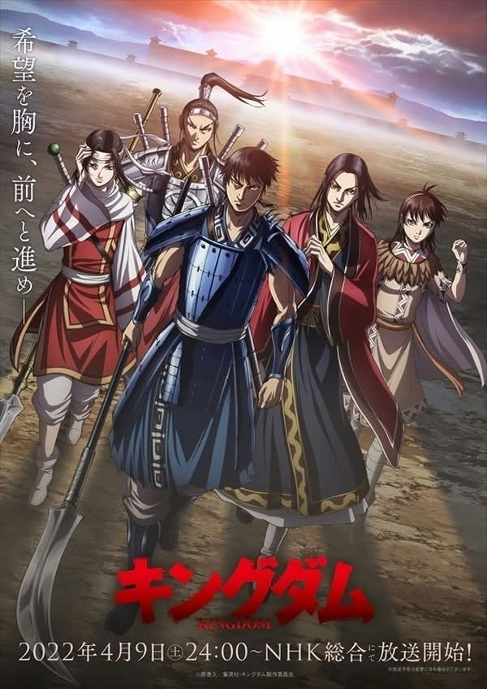

UNOFFICIAL FAN STORY · CHAPTER 01
Kingdom
A young commander must defend a border town with limited supplies, relying on observation and trust rather than the size of an army.
Chapter One: A New Beginning
The border tower’s bell rang twice. A large force was approaching, and the town had only a handful of guards. Commander Li studied the valley map and noticed a dry riverbed hidden beneath the reeds.
He divided his team into small groups: one to guide families toward the hills, one to carry water, and one to light signal fires along the ridge. The plan was not to defeat the approaching force but to keep the town safe until reinforcements arrived.
At dusk, the signal fires made the valley appear guarded from every direction. The opposing scouts slowed, uncertain of what waited beyond the hills. By morning, the relief force arrived and the town remained standing.
Li wrote the lesson into his journal: a commander’s first victory is the protection of the people who trust them.
This is an unofficial, original fan-made story and is not affiliated with the official creators or publishers.